It may also serve as an example of a very simple and, at the same time, practically useful application of DocFlex/XML. See templates to learn how it works.
The set includes two main templates (i.e. those to be specified directly in the generator dialog or on the command line with -template option):
We have chosen those files simply because we use Apache Ant itself (without learning much what those XSLT scripts do).
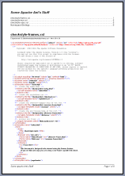 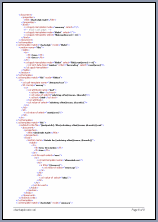 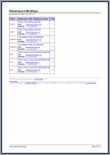
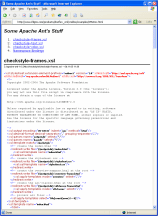
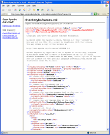
| Template | Annotation | Called From |
|---|---|---|
| PlainDoc.tpl | generates a single-file documentation from all specified XML files in any supported output format | generator |
| FramedDoc.tpl | generates a framed HTML documentation with a separate document for each XML file and table of contents frame | generator |
| Subtemplates | ||
| Document.tpl | processes a single XML file | PlainDoc.tpl, FramedDoc.tpl |
| xmlns-bindings.tpl | generates Namespace Bindings report | PlainDoc.tpl, FramedDoc.tpl |
| TOC.tpl | generates summary frame document | FramedDoc.tpl |
| about.tpl | prints the about information at the bottom of document | PlainDoc.tpl, Document.tpl, xmlns-bindings.tpl |
The following tree represents the DSM Type (Data Source Model Type) constructed by this definition (click on the picture to see the expanded tree):xmldoc.name = Generic XML Files xmldoc.pseudo-elements.all = true xmldoc.defaultRootElement = Documents
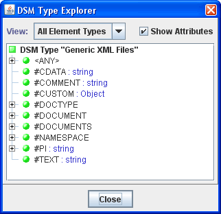The last line of the XML Type definition:
xmldoc.defaultRootElement = Documents
says that for any main template
based on this type, the generator should open all XML files specified for the processing and pass them
to the template as children of an #DOCUMENTS
pseudo-element, which will be the template's
root element.
See <typeId>.defaultRootElement
setting for more details.
Such documentation can be generated in any supported output format (which may be especially suitable for printing). To specify a necessary destination output format all you need is to select that format in “Output format” combo-box in the generator dialog or using -format option on the generator command line.
See RTF demo and single-file HTML demo documentation generated with this template.
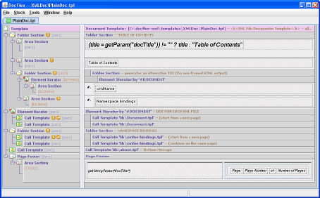The template is designed to process all XML files specified for the generator. In according with the “xmldoc” XML Type, the generator will open all those XML files and prepare them as children of an #DOCUMENTS pseudo-element passed to the template as its root element.
The Element Iterator titled “DOC FOR EACH XML FILE” is actually where all XML files are processed by calling Document.tpl subtemplate for each XML file.
The following screenshots show how those parameters are defined:
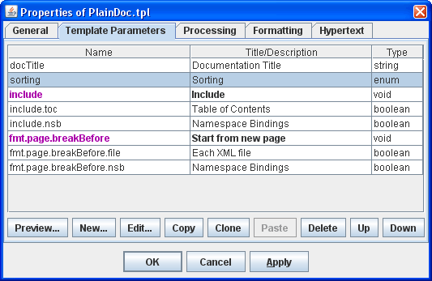This is the definition of a single parameter:
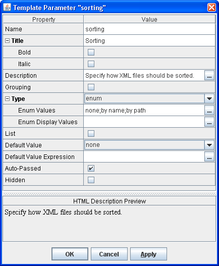And this is how the result Parameter Inspector looks:
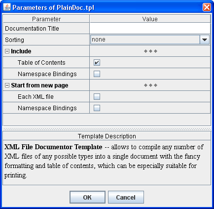
The following demo documentation was generated with FramedDoc.tpl template. This is a framed HTML variant of the same documentation shown in RTF demo (click on the picture to see the real HTML):
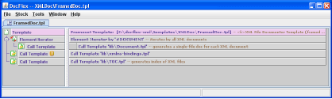The template's main block start with the element iterator section, which iterates by all XML files specified for processing by the generator. The generator opens each XML file and represents it as an #DOCUMENT pseudo-element. Such pseudo-elements are provided as children of another special pseudo-element #DOCUMENTS, which is the one passed to the template as its root element. The iterator contains a call to the Document.tpl template that generates a separate HTML document for each XML file.
The next call template section following the iterator call xmlns-bindings.tpl template which generates the Namespace Bindings report. The last one is a call of TOC.tpl template that generates the table of contents HTML document.
'index.html') that displays the whole
documentation.
This frameset HTML is generated by a special frameset structure definition contained
in the FramedDoc.tpl template and
shown on the following screenshot:
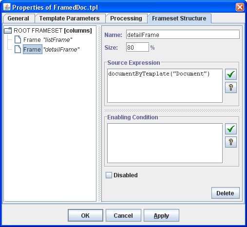The frameset structure defines frame windows and specifies which HTML document should be initially loaded in each frame. The frame definition shown on the screenshot specifies that the
'detailFrame' frame
should be preloaded with the first document produced by the Document.tpl template.
That would correspond with the first item in the table of contents produced by
TOC.tpl template.
The template consists of the following parts:
Besides this, there is a hypertext target definition specified in the template properties: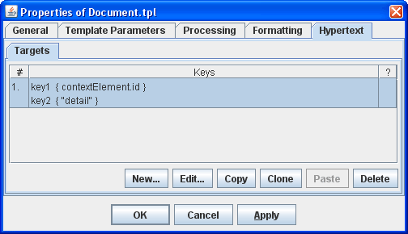This is used to generate a hyperlink to the detail of the particular XML file from the item representing it in the Table of Content (see TOC.tpl template).
Then, the generator starts processing the template's main block shown on the following screenshot (click to see in the full size):
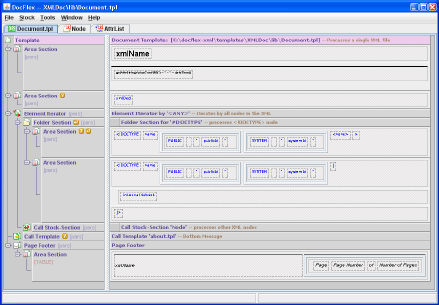The main block starts from the Area Sections, which generate the title information about the XML file.
Then, the Element Iterator
follows which iterates by all direct children of the Document node
provided by DOM (specifically, that is the node
represented by Java interface org.w3c.dom.Document).
The node associated with the XML file's <!DOCTYPE> statement is processed directly within the iterator's body. All other DOM nodes are processed by “Node” stock-section.
At the very bottom, you can see the Page Footer block. This block contains template components to generate a page footer used in RTF documentation (see RTF demo). That page footer displays the information specific to the given XML document. To make it appear on the pages related to the XML file, the generator produces a separate RTF output section per each call of the Document.tpl template.
This particular stock-section processes an XML document's node which may contain other child nodes:
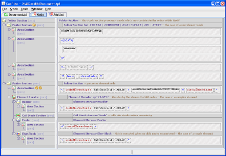You may notice a place where this stock-section calls itself to process nested nodes -- children of the one it received.
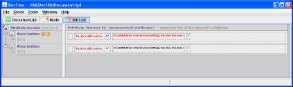The two nested area sections are variants of the same with slightly different text formatting.
'xmlns' or starts with 'xmlns:' or 'xml:' prefixes).
When you are reading certain XML documents, sometimes you may notice that the element tags contained in them are littered with various unknown namespace prefixes. For a big XML document, it may take some efforts to find the location where a particular namespace prefix is defined and to which URI it is bound (especially when that XML document is in the printed form).
The Namespace Bindings report helps to quickly find by a each prefix the namespace URI corresponding to it and the location where that binding is defined.
The xmlns-bindings.tpl template has a very simple structure shown on this screenshot (click to see in normal size):
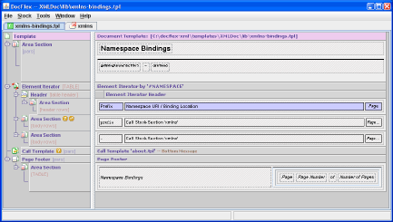Basically, the template consists of an Element Iterator that generates a table in which every namespace binding is represented by a row.
Here is how it works.
The template receives as its root element the #DOCUMENTS pseudo-element that represents all XML files. Then, the Element Iterator iterates by the #NAMESPACE pseudo-elements collected according to the following Location Rule (specified in the iterator properties):
* -> child::#DOCUMENT/namespaces^::#NAMESPACE
The left part of the rule is the
Location Path
which defines the search of the #NAMESPACE
elements:
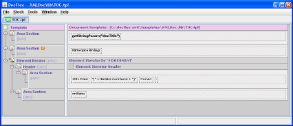The template receives #DOCUMENTS root element. The Element Iterator iterates by all XML documents and generates the summary list of XML files.
Each summary item is produced by a data control (shown on the screenshot as rectangle with “xmlName”). This data control prints the name of each particular XML file as well as generates a hyperlink to the XML file's detailed documentation.
The hyperlink is defined in the data control's properties:
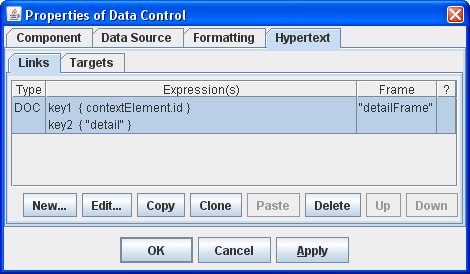When a hyperlink is generated, it is connected to the target using values of keys generated by expressions specified in the hyperlink definition properties (see screenshot). The corresponding target keys are generated using similar expressions defined in the properties of Document.tpl template.
The “detailFrame” is the name of the target frame window where the HTML document referenced by hyperlink is loaded (see frameset structure definition).
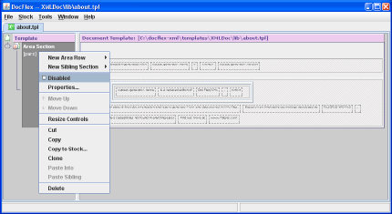or replace it with something of your own.